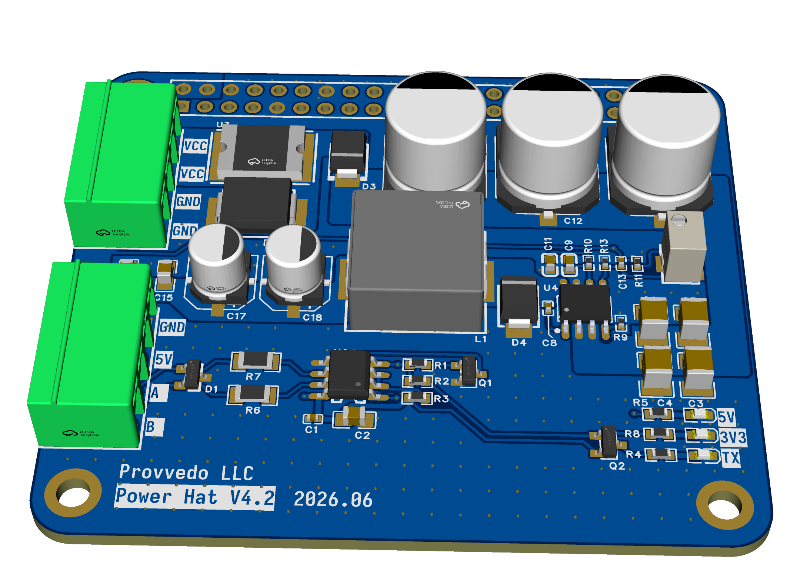
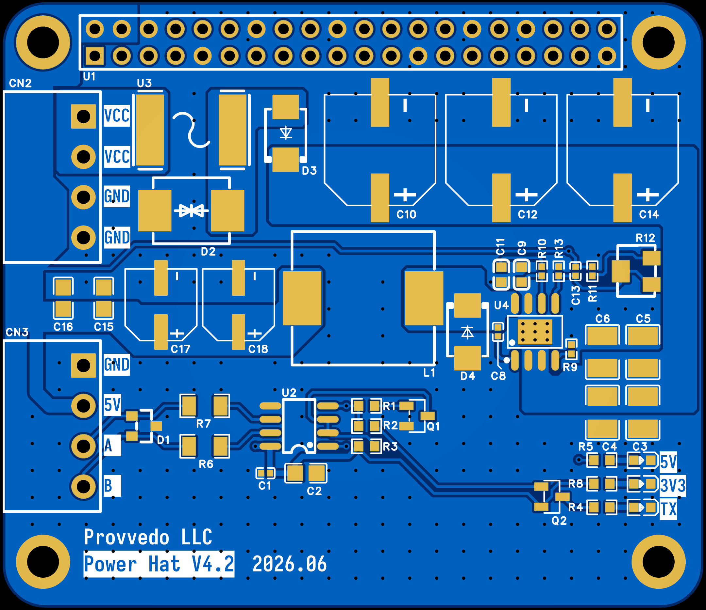
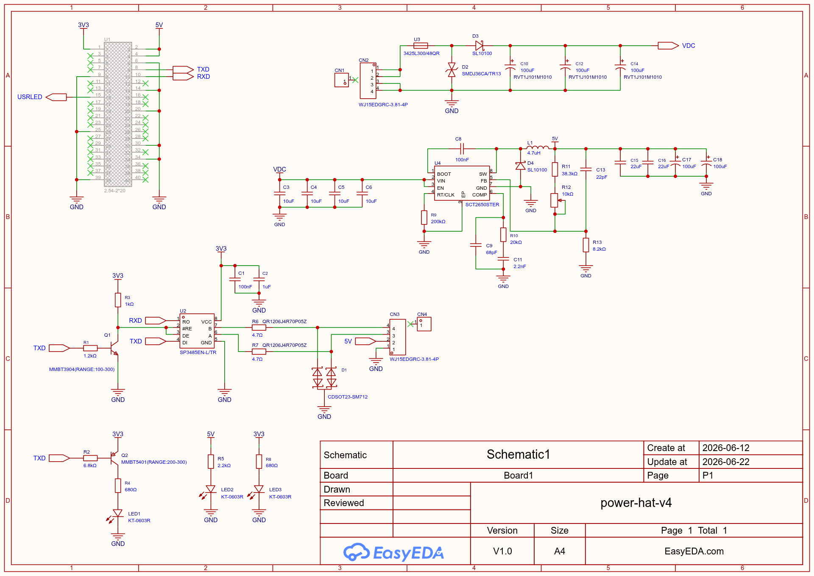

A Raspberry Pi HAT that powers the Pi from a wide-input DC supply and gives it a protected RS-485 link to the drDRO controller board — the power-and-comms interface of the system. Designed in EasyEDA Pro.

On a drDRO machine the Raspberry Pi runs the touchscreen app and talks to the STM32 controller over RS-485. The Power HAT solves the two practical problems of putting a Pi in a machine cabinet:
Take the machine's DC supply (e.g. 12–24 V) and step it down to a clean 5 V to run the Pi — with a resettable fuse, reverse-polarity protection and input surge/TVS.
Bridge the Pi's UART to a half-duplex RS-485 bus (the drDRO line protocol), with automatic direction control and bus-side TVS protection.
SCT2650, 4.5–60 V range).SP3485, 3.3 V, ≤ 10 Mbps) with automatic TX/RX direction — no GPIO needed.DC input ─▶ PPTC fuse (U3) ─▶ series Schottky D3 ─┬─ TVS D2 ─┬─ VDC ─▶ Buck U4 (SCT2650) ─▶ 5V ─▶ Pi 5V rail
(VCC/GND) (reverse-polarity) │ (surge) │ + L1 4.7µH, bulk caps
└──────────┘
Pi 3V3 ─▶ RS-485 transceiver U2 (SP3485) ─▶ series R + TVS D1 ─▶ A / B ─▶ terminal block (to controller)
Pi UART TXD/RXD ───────────▲ auto-direction (Q1 driven from TXD)The 5 V rail is adjustable — set it to 5.1 V. The buck's feedback divider includes a multiturn trimmer (R12). Before relying on the board, measure the output with a multimeter and trim it to 5.1 V, giving the Pi and its USB devices a little headroom above 5.0 V under load. See the calibration step under Using it.
| Form factor | Raspberry Pi HAT (40-pin GPIO, 4 corner mounting holes) |
|---|---|
| PCB | 4-layer, 1 oz outer copper |
| DC input | Wide DC — buck rated 4.5–60 V, bulk caps 63 V; keep the supply ≤ 36 V (bounded by the input TVS, SMDJ36CA). A 12–24 V machine supply is ideal. |
| Output | 5 V to the Raspberry Pi — adjustable via multiturn trimmer R12; set to 5.1 V before use |
| Comms | Half-duplex RS-485, ≤ 10 Mbps, auto-direction; A/B on a terminal block |
| Connectors | 2 × 4-pos 3.81 mm pluggable terminal blocks (DC in, controller out) + 2×20 GPIO header |
| Indicators | 5 V, 3.3 V and TX-activity LEDs |
Single power source. The HAT supplies the Pi's 5 V rail — do not also power the Pi from its USB-C connector at the same time.
| Connector | Type | Signals | Purpose |
|---|---|---|---|
| DC input | 4-pos 3.81 mm | VCC, VCC, GND, GND | Machine DC supply in (doubled pins for current) |
| Controller | 4-pos 3.81 mm | GND, 5V, A, B | RS-485 + power to the drDRO board |
| GPIO header | 2×20, 2.54 mm | 5V, GND, TXD/RXD (GPIO14/15), 3V3 | Mounts on the Raspberry Pi |
JLCPCB/LCSC parts throughout; the full BOM is exportable from the EasyEDA Pro project.
| Ref | Part | Function |
|---|---|---|
U4 | SCT2650STER | Wide-input (4.5–60 V) step-down regulator → 5 V |
L1 | SRP1265A-4R7M (4.7 µH, 13.5 A) | Buck power inductor |
U3 | 3425L300/48QR (PPTC, 3 A hold) | Resettable input fuse |
D3 / D4 | SL10100 Schottky | Reverse-polarity / freewheel |
D2 | SMDJ36CA (bidirectional TVS, 36 V) | Input surge protection |
C10/12/14 | 100 µF / 63 V (Rubycon RVT) | Input bulk |
U2 | SP3485EN-L | RS-485 transceiver (3.3 V, 10 Mbps) |
Q1 | MMBT3904 | RS-485 auto-direction control |
D1 | SM712 (CDSOT23) | RS-485 A/B TVS protection |
R12 | 3224W 10 kΩ multiturn trimmer | 5 V output adjust (set to 5.1 V) |
LED1–3 | KT-0603R | TX activity / 5 V / 3.3 V indicators |
Assembled board.

Top + bottom copper.

Power + RS-485.
The design is an EasyEDA Pro project (power-hat-project.epro2).
Get it from pro.easyeda.com (desktop or web).
File → Import → EasyEDA Pro and select power-hat-project.epro2 from the repo.
Schematic, PCB, footprints, symbols and 3D models are all contained in the archive; parts reference LCSC components, ready for assembly.
From the opened project in EasyEDA Pro:
Or order it fabricated + assembled.
Apply the DC input, put a multimeter on the 5 V output, and turn the multiturn trimmer (R12) until it reads 5.1 V. Then remove input power. This protects the Pi from ever seeing an un-trimmed voltage.
Plug the HAT onto the Raspberry Pi's 40-pin header.
Machine DC supply (≤ 36 V) into the DC-in terminal block (VCC / GND).
The controller terminal block (5V / A / B / GND) to the drDRO board's RS-485 + power.
The HAT powers the Pi and bridges its UART to the RS-485 bus. The LEDs confirm 5 V, 3.3 V and TX activity.
Next: flash the Pi with the appliance image and make sure the board runs compatible firmware.